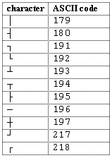
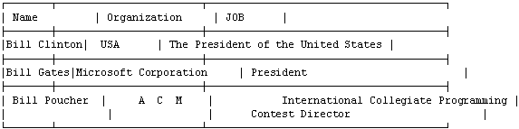

| Table |
 A lot of text editors allows us to make tables with the help of pseudographical characters but do not let edit them, i.e. after alternation of the text in cells, to restore the marking of lines and columns you have to align the whole table manually. You are offered to implement an editor fragment carrying out an automatic table alignment.
The table represents a rectangle divided into cells with vertical and horizontal lines, linking its borders. Vertical and horizontal markers as well as the rectangle itself are formed by pseudographical characters from figure 1.
The text in table cells can be located in several lines. Text does not contain control and pseudographical characters.
While editing a table the text of cells is being changed and as a result symbols `' (ASCII 179) can be shifted to the left or to the right. The number of lines and columns of the table as well as the number of lines in each cell is not being changed.
The text in each line of each cell should be separated from vertical markers exactly with one space on the left and no less than with one space on the right in the aligned table. All spaces between words are significant. It is allowed only:
The table does not contain empty columns, i.e. each column contains at least one cell with non-empty text.
It is required to format a given table making its width (the length of table line) minimal.
Input for each dataset contains an edited table. It consists of no more than 100 lines and line length is no more then 255 characters. Lines themselves do not contain leading and trailing spaces. The datasets do not contain empty lines.
1 